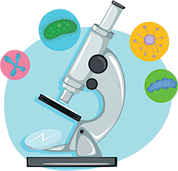

Микроскоп

Микроскоп - это оптический прибор, позволяющий получить увеличенные изображения мелких предметов или их деталей, которые невозможно рассмотреть невооружённым глазом.
Дословно слово «микроскоп» означает «наблюдать за чем-то маленьким, (от греческого «малый» и «смотрю»).
Глаз человека, как любая оптическая система, характеризуется определённым разрешением. Это наименьшее расстояние между двумя точками или линиями, когда они ещё не сливаются, а воспринимаются раздельно друг от друга. При нормальном зрении на расстоянии 250 мм разрешение составляет 0,176 мм. Поэтому все объекты, размер которых меньше этой величины, наш глаз уже не в состоянии различить. Мы не можем видеть клетки растений и животных, различные микроорганизмы и др. Но это можно сделать с помощью специальных оптических приборов - микроскопов..
Когда появился первый микроскоп, точно неизвестно. Простейшие увеличительные приборы - двояковыпуклые оптические линзы, находили ещё при раскопках на территории Древнего Вавилона.
Считается, что первый микроскоп создали в 1590 г. голландский оптик Ганс Янсен и его сын Захарий Янсен. Так как линзы в те времена шлифовали вручную, то они имели различные дефекты: царапины, неровности. Дефекты на линзах искали с помощью другой линзы - лупы. Оказалось, что если рассматривать предмет с помощью двух линз, то происходит его многократное увеличение. Смонтировав 2 выпуклые линзы внутри одной трубки, Захарий Янсен получил прибор, который напоминал подзорную трубу. В одном конце этой трубки находилась линза, выполняющая функцию объектива, а в другом - линза-окуляр. Но в отличие от подзорной трубы прибор Янсена не приближал предметы, а увеличивал их.
В 1609 г. итальянский учёный Галилео Галилей разработал составной микроскоп с выпуклой и вогнутой линзами. Он называл его «оккиолино» - маленький глаз.
10 лет спустя, в 1619 г. нидерландский изобретатель Корнелиус Якобсон Дреббель сконструировал составной микроскоп с двумя выпуклыми линзами.
Мало кто знает, что свой название микроскоп получил только в 1625 г. Термин «микроскоп» предложил друг Галилео Галилея немецкий доктор и ботаник Джованни Фабер.
Все созданные в то время микроскопы были довольны примитивными. Так, микроскоп Галилея мог увеличивать всего в 9 раз. Усовершенствовав оптическую систему Галилея, английский учёный Роберт Гук в 1665 г. создал свой микроскоп, который обладал уже 30-кратным увеличением.
В 1674 г. нидерландский натуралист Антони ван Левенгук создал простейший микроскоп, в котором использовалась всего одна линза. Нужно сказать, что создание линз было одним из увлечений учёного. И благодаря его высокому мастерству в шлифовании, все сделанные им линзы получались очень высокого качества. Левенгук называл их «микроскопиями». Они были маленькие, размером с ноготь, но могли увеличивать в 100 или даже в 300 раз.
Микроскоп Левенгука представлял собой металлическую пластину, в центре которой находилась линза. Наблюдатель смотрел через неё на образец, закреплённый с другой стороны. И хотя работать с таким микроскопом было не совсем удобно, Левенгук смог сделать с помощью своих микроскопов важные открытия.
В те времена было мало известно о строении органов человека. С помощью своих линз Левенгук обнаружил, что кровь состоит из множества крошечных частиц - эритроцитов, а мышечная ткань - из тончайших волокон. В растворах он увидел мельчайшие существа разной формы, которые двигались, сталкивались и разбегались. Теперь мы знаем, что это бактерии: кокки, бациллы и др. Но до Левенгука об этом не было известно.
Всего учёным было изготовлено более 25 микроскопов. 9 из них сохранились до наших дней. Они способны увеличивать изображение в 275 раз.
Микроскоп Левенгука был первым микроскопом, который завезли в Россию по указанию Петра I.
Постепенно микроскоп совершенствовался и приобретал форму, близкую к современной. Учёные России также внесли огромный вклад в этот процесс. В начале XVIII века в Петербурге в мастерской Академии наук создавались усовершенствованные конструкции микроскопов. Русский изобретатель И.П. Кулибин построил свой первый микроскоп, не имея никаких знаний о том, как это делали за границей. Он создал производство стекла для линз, придумал приспособления для их шлифовки.
Великий русский учёный Михаил Васильевич Ломоносов первым из русских учёных стал использовать микроскоп в своих научных исследованиях.
Однозначного ответа на вопрос «Кто же всё-таки изобрел микроскоп?», пожалуй, не существует. В развитие микроскопного дела внесли вклад лучшие ученые и изобретатели разных эпох.
Оптические микроскопы. Оптический световой микроскоп состоит из механической, оптической и осветительной частей. С помощью такого микроскопа можно различать микрочастицы до 0,20 мкм, а максимальное увеличение микроскопа составляет 2000 крат. Оптические микроскопы подразделяются на подвиды в зависимости от назначения: биологические, металлографические, поляризационные и так далее (более подробно о внутренней классификации здесь). О строении оптического микроскопа можно узнать из статьи «Конструкция микроскопа».
Электронные микроскопы. Электронные микроскопы позволяют добиться гораздо большего увеличения, чем оптические. Все дело в использовании пучка электронов вместо светового потока, благодаря чему электронный микроскоп обеспечивает увеличение до 200 000 раз. Что касается разрешающей способности, то она в 1000 раз превосходит разрешающую способность оптического светового микроскопа. В конструкцию электронного микроскопа входят специальные магнитные линзы, которые управляют движением электронов. Подробнее об электронных микроскопах читайте в соответствующей статье.
Рентгеновские микроскопы. Действие таких микроскопов основано на использовании электромагнитного излучения с длиной волны от 0,01 до 1 нм, что позволяет исследовать с их помощью очень малые объекты. Исходя из разрешающей способности рентгеновские микроскопы по их мощности можно позиционировать как нечто среднее межу оптическими и электронными микроскопами (разрешающая способность около 2-20 нм).
Сканирующие зондовые микроскопы. Такой микроскоп Вы вряд ли приобретете для домашнего использования. Это уже специализированный класс микроскопов, в котором для построения изображения используется специальный зонд для сканирования поверхности. Благодаря такому микроскопу получают трехмерное изображение с очень высоким разрешением (вплоть до атомарного). Благодаря рекордному разрешению (менее 0,1 нм) такие микроскопы позволяют видеть молекулы и атомы, а также воздействовать на них (при этом объекты могут изучаться не только в вакууме, но и в газах и жидкостях).